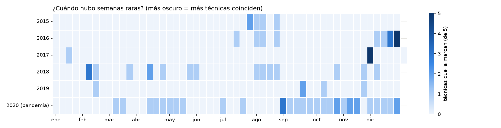

Ingeniería de Características — Proyecto EDA
El impacto de las condiciones ambientales
en la salud respiratoria de los hermosillenses
Calor, frío, sequía, calidad del aire y marginación · Análisis exploratorio semanal 2015–2020
Ana Patricia Quiroz Reyes · Luis Hiram Hernández
Gutiérrez · Víctor Andree De La Torre Velázquez
Contexto
¿Por qué estudiar esto?
Hermosillo vive extremos: veranos de más de 40 °C, sequías largas,
polvo en el aire y frentes fríos en invierno.
Cada semana se reportan miles de casos de infecciones respiratorias agudas
(IRA): gripe, faringitis, bronquitis.
Nuestra intuición era: el calor y el aire sucio enferman a la gente,
y las colonias más pobres deberían sufrir más.
PREGUNTA 1
¿El calor, el frío, la sequía y la
calidad del aire influyen en los casos de IRA?
PREGUNTA 2
¿Las colonias más marginadas son
las más afectadas?
2 / 12
Los datos
Seis fuentes públicas, 2015–2020
| ¿Qué medimos? | ¿Quién lo publica? | ¿Cada cuánto? |
|---|
| Casos de IRA | Secretaría de Salud / DGIS (SUIVE) | Semanal, por clínica |
| Clínicas y su ubicación (CLUES) | Secretaría de Salud / DGIS | Catálogo |
| Temperatura y humedad | SMN-CONAGUA y Open-Meteo | Diario / mensual |
| Sequía | Monitor de Sequía, CONAGUA | Quincenal |
| Calidad del aire (PM10, PM2.5, ozono) | RUOA-UNAM, estación ERNO | Cada hora |
| Marginación | CONAPO / INEGI | Censos 2015 y 2020 |
Cada fuente viene en un formato y un ritmo distinto. El primer reto fue
ponerlas a hablar el mismo idioma.
3 / 12
Cómo lo construimos
Del dato crudo al panel semanal
1FuentesLas 7 fuentes públicas: clima, sequía, aire, marginación, casos de IRA y clínicas.
→
2IngestaDescargamos cada fuente y revisamos cada fila antes de usarla.
→
3ProcesamientoLimpiamos, nos quedamos con Hermosillo y pasamos todo a semanas.
→
4Panel semanalUna sola tabla: 313 semanas × 62 variables.
Cada fuente llega con su propio formato y frecuencia (horas, días, quincenas, censos). Al final todas hablan el mismo idioma: una fila por semana.
4 / 12
La unidad de análisis
¿Por qué por semana?
Así llegan los casosSalud reporta por semana epidemiológica; no perdemos detalle.
Se ven los retrasosSi el frío enferma semanas después, por mes no se notaría.
Se ven eventos cortosOlas de calor, frentes fríos y días de polvo duran días, no meses.
También armamos un panel mensual (72 meses) como apoyo.
5 / 12
Antes de analizar
Revisamos la calidad de los datos
Datos faltantes: solo en la calidad del aire. La estación dejó de medir
a mediados de 2018 y el PM2.5 casi no tiene datos válidos, así que lo dejamos fuera.
Semanas raras: con cuatro métodos encontramos 7 semanas extremas.
Casi todas son eventos reales (polvo en 2017, sequía en 2018, pandemia en 2020).
No borramos ningún dato: las semanas raras cuentan la historia, no son errores.

Las semanas atípicas se agrupan en eventos reales y, sobre todo, en 2020.
6 / 12
Hallazgo
Los casos tienen temporada
Todos los años, los casos casi se triplican en invierno:
de ~1,900 a ~6,200 por semana.
Con solo saber el mes se explica el
79 % de los cambios en los casos.
El clima y el aire también tienen su temporada, pero cada uno en un mes distinto.

Casos en enero, temperatura en junio, ozono en abril, PM10 en noviembre.
7 / 12
Por qué engaña
La trampa del calendario
En verano se vende más helado y hay más quemaduras de sol.
¿El helado quema? No: los dos dependen del verano. Con el clima y los casos pasa igual.

Casos (azul) contra cada variable (naranja): cada una sube en su propio mes.
8 / 12
Resultado
Comparando enero con enero, la relación desaparece
A cada semana le restamos lo normal para su mes y medimos la relación con la
correlación de Spearman (de −1 a +1; cerca de 0 es “sin relación”).
| Variable | Tal cual | Comparando con lo normal del mes | ¿Qué quiere decir? |
|---|
| Temperatura | −0.78 | −0.02 | Era solo el calendario |
| Polvo (PM10) | +0.49 | +0.12 | Era solo el calendario |
| Ozono | +0.21 | +0.12 sin 2016 | Débil, depende de datos dudosos |
| Frío fuera de lo normal, 5 semanas antes | — | −0.15 | La única que sobrevive |
Ninguna señal apunta al calor extremo: la idea inicial no se confirma.
9 / 12
Pregunta 2: vulnerabilidad
¿Las colonias marginadas enferman más?
De 103 clínicas, las 17 con coords erróneas del
catálogo se corrigieron a mano y 91 caen dentro de una colonia:
tenemos el 94 % de los casos para
63 de 657 colonias.
Ordenamos las colonias por marginación y por casos, y comparamos los dos órdenes.
No coinciden: ρ = 0.19, prácticamente cero y no significativa (p = 0.14).
Además, todos los grupos tienen la misma temporada (×2.9 y ×3.0 en invierno)
y ninguno reacciona peor al frío.
10 / 12
El hallazgo clave
La red de salud no llega a todos
Las 12 colonias más marginadas de Hermosillo no tienen ninguna clínica
que reporte casos.
No es que ahí no haya enfermos: es que no los vemos en los datos.
Donde más haría falta observar, no hay observatorio. Esa falta de acceso
ya es, en sí misma, una forma de vulnerabilidad.

Marginación por colonia (CONAPO 2020) y clínicas (puntos).
11 / 12
Conclusión
Lo que aprendimos y lo que sigue
PREGUNTA 1
El calendario explica casi todo; solo el
frío fuera de lo normal deja una señal débil semanas después. La planeación debe enfocarse en el invierno.
PREGUNTA 2
En las colonias que vemos, la marginación no cambia
el riesgo. Pero las 12 más marginadas no tienen clínica que reporte.
1Modelo con el fríoUsar el frío de 3 a 5 semanas antes.
2Un solo índiceTemperatura, humedad y PM10 juntas.
3Tablero de inviernoPronóstico estacional para las clínicas.
4Domicilio del pacientePara responder la pregunta 2.
Gracias.
FUENTES
Casos de IRA: Secretaría de Salud / DGIS, SINAIS (SUIVE) 2010–2020 ·
Temperatura: SMN-CONAGUA y Open-Meteo · Sequía: Monitor de Sequía, CONAGUA ·
Aire: RUOA-UNAM, estación ERNO · Marginación: CONAPO/INEGI · Clínicas: catálogo CLUES, DGIS